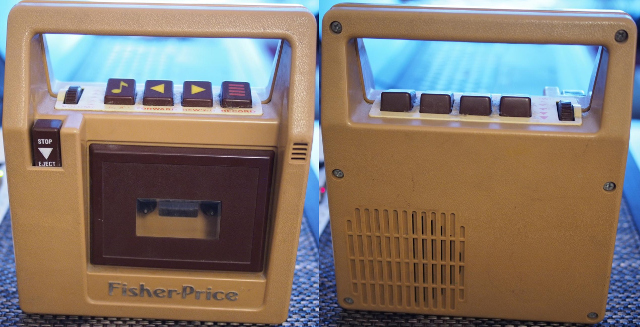
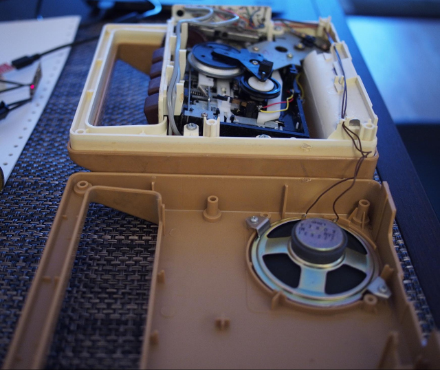
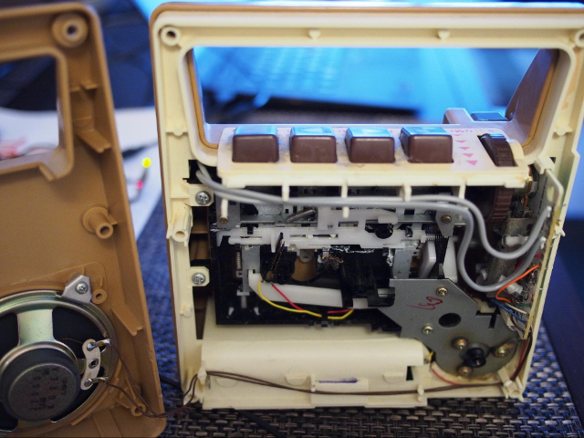
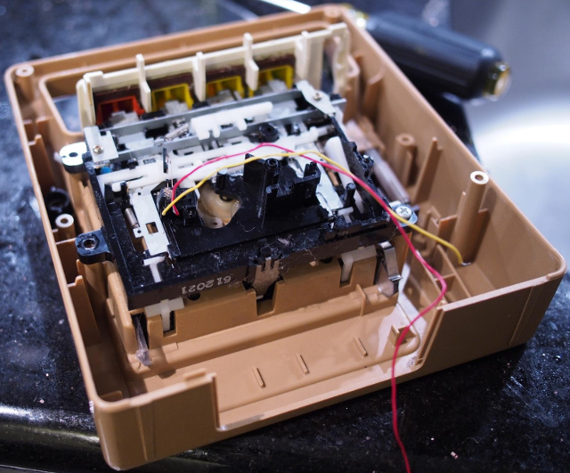
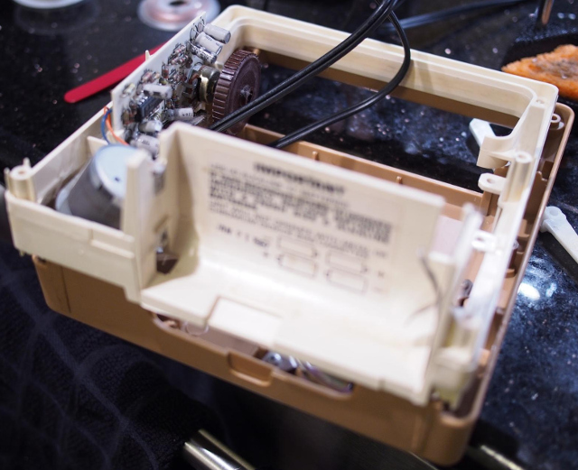
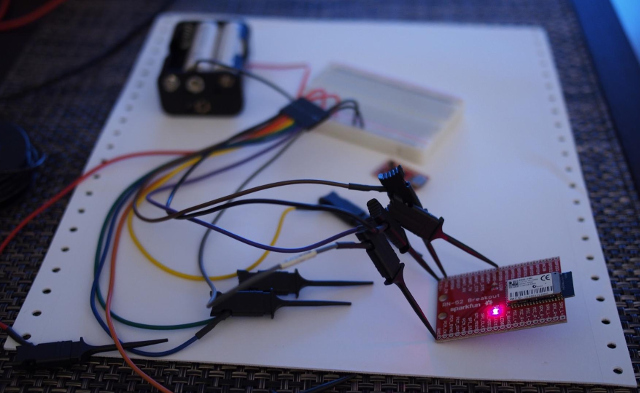
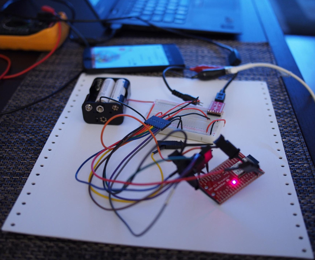
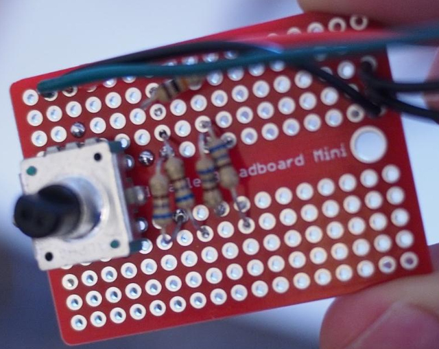
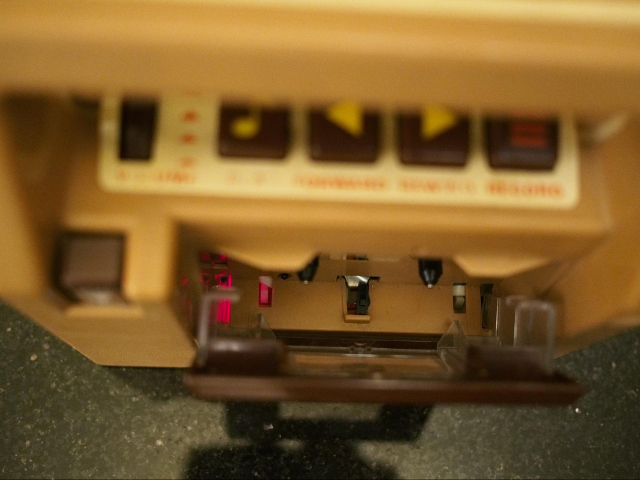

This is my #826 Fisher-Price tape recorder. Manufactured January 21, 1987 (as stamped in the battery compartment).
I used it constantly when I was a kid. When I found it again in 2015, it didn’t work anymore. The problem was probably just a broken or missing belt, which I could have replaced. Instead, I made some deeper changes - I converted it into a Bluetooth speaker.
A Look Inside
The #826 tape recorder is quite easy to open up - just six screws on the back, and then the entire back slides right off.

There’s a 3" speaker mounted to the back of the case. I was hoping to re-use the speaker as-is, but measured it to have an impedance of 32Ω, which I thought might be a little high for the amplifier components designed for 8Ω speakers that I was planning on using. I stuck with the original speaker at first, which seemed to work, but eventually I replaced it with an 8Ω speaker of the same size.

This is a closer view of most of the mechanical and electronic components, with the belt mechanism (visible in the previous image) already removed. There are a fair number of mechanical springs, plastic levers, etc. that are used to control the tape deck. I did not want to simply remove these, because I wanted to try to maintain the original feel of the buttons, and I thought keeping the springs intact would be the easiest way to do so.
There was a single PCB in a slot near the right side of the case. I did not intend to reuse any of its electronics. The interesting part here was the volume knob, which I wanted to remain functional. It was attached directly to a potentiometer on the PCB. To get a value from the volume knob, I would either have to keep the existing potentiometer in place and measure it digitally, or replace it with another sensor that fit the volume knob and would sit at the correct location in the case. I decided to replace the PCB and potentiometer, as that gave me the flexibility to use a rotary encoder instead of a potentiometer, and removing the PCB introduced more space for my components around where the PCB used to be.

This is the front half of the case, with the middle section of the case removed - this was the most I would ever disassemble the tape recorder. I took it apart this far to remove the thick grey wires for the microphone. I did not intend to try to reuse the microphone, and the microphone wires were in the way taking up a lot of space (although subsequently, using the tape recorder as a giant Bluetooth headset has come up in conversation - maybe I will someday regret removing the microphone wires).
The underside of the play/forward/rewind/record buttons can also be seen in this image. They push down on the slotted metal bars, which then push on the various levers and switches that control the tape deck. Getting the buttons to fit into their hinges and sit on the metal bars just right is very annoying - every time I open the case and disturb the button mechanism, I have to spend a bunch of time jiggling the buttons back into place.

This is a view of the (blurry) battery compartment and the (in-focus, more or less) PCB. You can see how the volume knob is mounted to the potentiometer. I power the whole project off of C batteries in the original battery compartment.
Audio Components
Almost all of the parts I used came from SparkFun, an excellent source of easy-to-use and well-documented hobbyist electronics components.
The core of the project is a Roving Networks RN-52 Bluetooth Audio module (mounted to SparkFun’s breakout board for this module).

The first time I powered up the RN-52 module I used 3 rechargable 1.2 volt AA batteries, for a total voltage of 3.6 volts (the RN-52 is a 3.3 volt component, but 3.6 volts is acceptable). It started up without any problems.
The RN-52 can do a lot! It can handle many different Bluetooth versions and profiles, and accepts configuration and commands via a UART console interface. I’m only using a subset of what it’s capable of.

I made many temporary connections to the Bluetooth module to test it. Here I’ve got it hooked up to a SparkFun FT231X breakout board for communicating with the module’s console interface via USB on my laptop, and I’ve got it’s audio outputs (poorly) clipped to a pair of headphones.
The console interface offers a lot of settings, but the defaults were pretty close to what I wanted. The only changes I made were setting the device name to "FisherPrice" (this is the name that will appear when pairing), and enabling AVRCP (Audio/Video Remote Control Profile) so that I could use the RN-52's GPIO pins to send play/pause, next/previous, and volume commands. Instructions for enabling the AVRCP were pretty well hidden - luckily, the SparkFun RN-52 Bluetooth Hookup Guide covers this feature, and links to the Command Specifications document which has even more detail.
The RN-52 offers stereo differential audio outputs, which can be connected directly to speakers without using an external amplifier. I was concerned that this might not be loud enough, and I also wanted to attempt to use the Fisher-Price tape recorder’s original single mono speaker, so some more components were needed for the audio output.
I added another amplifier, which would take the RN-52's pre-amplified output as an input. I used a SparkFun TPA2005D1 Mono Audio Amp Breakout. This is a class-D amplifier based on the Texas Instruments TPA2005D1. It defaults to a 2x gain, but provides the option to solder more resistors to the board to achieve even higher gain.
I needed to sum the left and right outputs of the RN-52 to be able to attach them both to the mono audio amp’s single input. I searched around for suggestions for a circuit to do this, and came up with putting resistors (I used 680Ω) in series with each differential output, then attaching both positive outputs to the amp’s positive input and both negative outputs to the amp’s negative input. This seemed to work, although it also seemed to lose some volume in the process.

Here’s the left/right summing circuit - inputs on the bottom, outputs on the top. I also added a 10KΩ resistor between the outputs. When I took this photo, I had already started using some of the remaining space on this breadboard for other connections. The rotary encoder for the volume knob can be seen on the left. On the right side, I used this board for power distribution - only a ground bus is connected in this image, but eventually I'd also add a +3.3v bus and a +6v bus.
I measured the impedance of the original speaker to be 32Ω - higher than the 8Ω the mono audio amp was designed for. I figured this was another reason for relatively low volume, and eventually replaced it with an 8Ω speaker (a CUI GF0771 I ordered from DigiKey). This surprisingly (to me, anyway, with my poor understanding of speaker impedance) did not result in significantly louder output. Eventually I added more resistors to the TPA2005D1 board to increase the gain even further - that helped. The volume level still isn't earth-shaking, but practically it's usable.
Power
For a power source, I use C batteries in the original 4 battery compartment. 4 C batteries at 1.5 volts each provides 6 volts. This is almost perfect for the mono audio amp (which suggests 5.5 volts max, with an absolute maximum of 6 volts - I just run it at 6 volts), but the RN-52 requires 3.3 volts. I needed a voltage regulator to provide power from these batteries at a voltage level appropriate for the RN-52. Unrelatedly, I also needed a microcontroller to read the volume knob rotary encoder and write to the RN-52 volume up and down pins. The SparkFun Arduino Pro Mini 328 - 3.3V/8MHz serves both purposes. It has a 3.3 volt voltage regulator that provides power to both the Arduino and the RN-52, as well as a microcontroller and an excellent software library for reading from rotary encoders.
I needed to add a new power switch to turn it all on and off. The original electronics didn’t have a power switch for the whole system, and I didn’t want to leave the electronics on all the time, or have to pull out batteries to turn it off, or start messing around with low-power modes. I struggled to find a relatively accessible spot to add a power switch that didn’t affect the original aesthetics too much. Eventually I found a little spot underneath the cassette tape holder where I could hot glue a simple plastic DPST on-off switch. The hot connection from the battery compartment is switched directly using this switch, rather than using a relay, so the full current is passing through the switch - in practice, this hasn't yet been a problem.

Look closely at the bottom center of the cassette tape holder, and you can make out the tiny black plastic power switch. You can also see the red glow from the power LEDs on the Bluetooth audio board and the amplifier board.
Volume Control
I was lucky that this 12-step Rotary Encoder I ordered from SparkFun just happened to fit the volume knob perfectly (it had a D-shaped post that I suppose is fairly standard). I guess some things haven’t changed since 1987. I connected the rotary encoder to the Arduino and installed the Encoder library from PJRC. This made it really easy to tell when the volume knob was clicked up or down, and I wrote a sketch to pull down the volume up or volume down pins on the RN-52 each time this happened.
#include <Encoder.h>
#define ENC_A 2
#define ENC_B 3
#define VOL_UP 8
#define VOL_DOWN 9
#define LED 13
#define BUTTON_PRESS_DELAY 100
Encoder encoder(ENC_A, ENC_B);
int lastValue = 0;
void setup() {
pinMode(VOL_UP, OUTPUT);
digitalWrite(VOL_UP, HIGH);
pinMode(VOL_DOWN, OUTPUT);
digitalWrite(VOL_DOWN, HIGH);
pinMode(LED, OUTPUT);
}
void loop() {
int value = encoder.read();
if (value < lastValue) {
digitalWrite(VOL_UP, LOW);
digitalWrite(LED, HIGH);
delay(BUTTON_PRESS_DELAY);
digitalWrite(VOL_UP, HIGH);
digitalWrite(LED, LOW);
} else if (value > lastValue) {
digitalWrite(VOL_DOWN, LOW);
digitalWrite(LED, HIGH);
delay(BUTTON_PRESS_DELAY);
digitalWrite(VOL_DOWN, HIGH);
digitalWrite(LED, LOW);
}
lastValue = value;
}